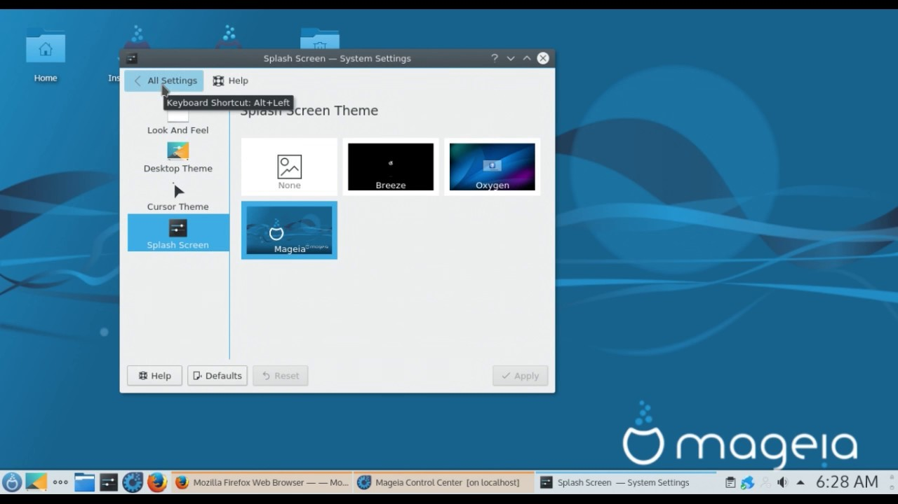

Mageia est un système d’exploitation libre, basé sur GNU/Linux. C’est un projet communautaire, soutenu par une association loi 1901 constituée de contributeurs élus.
But : fabriquer de superbes outils pour tout le monde.Au delà de fournir un système d’exploitation sûr, stable et durable pour vos ordinateurs, le but est aussi de devenir et faire vivre une communauté crédible et reconnue dans le monde du logiciel libre.
Maegia est une distribution éditée par Maegia.org .
La première version de Maegia est sortie le 1er juin 2011.
Environnements de bureau : Plasma/Gnome/Xfce/LXDE/LXQT
Mageia sous l'environnement de bureau Plasma
Les + :
Les - :